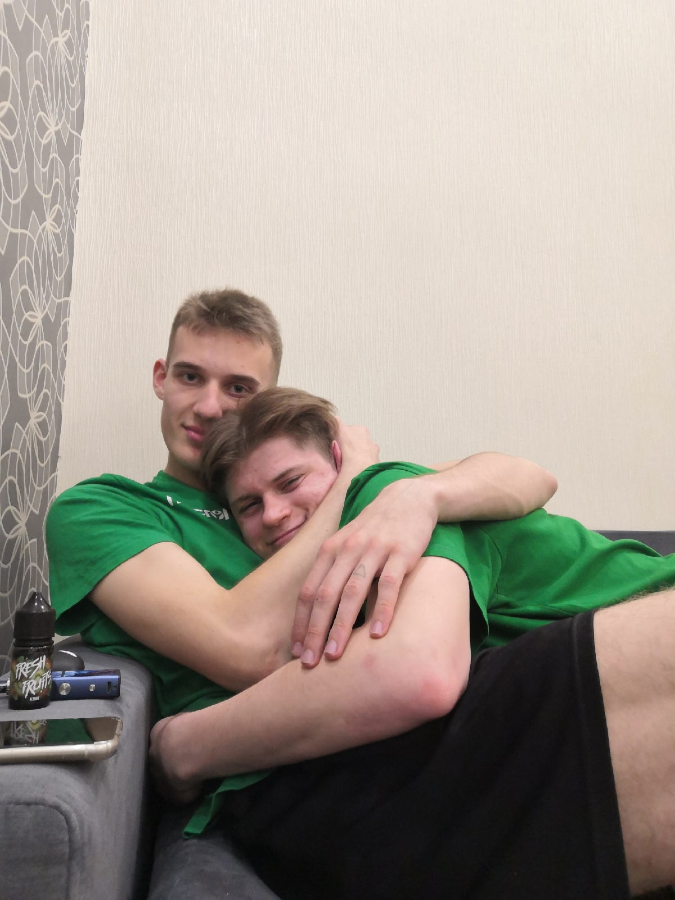
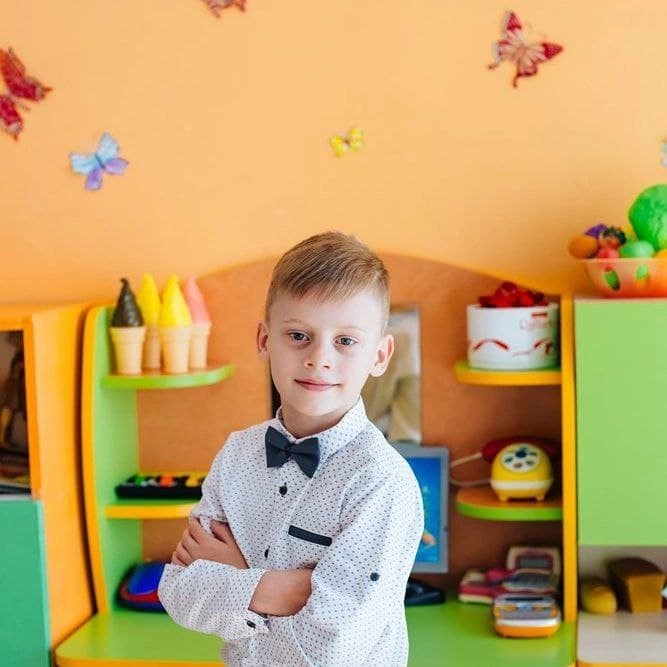
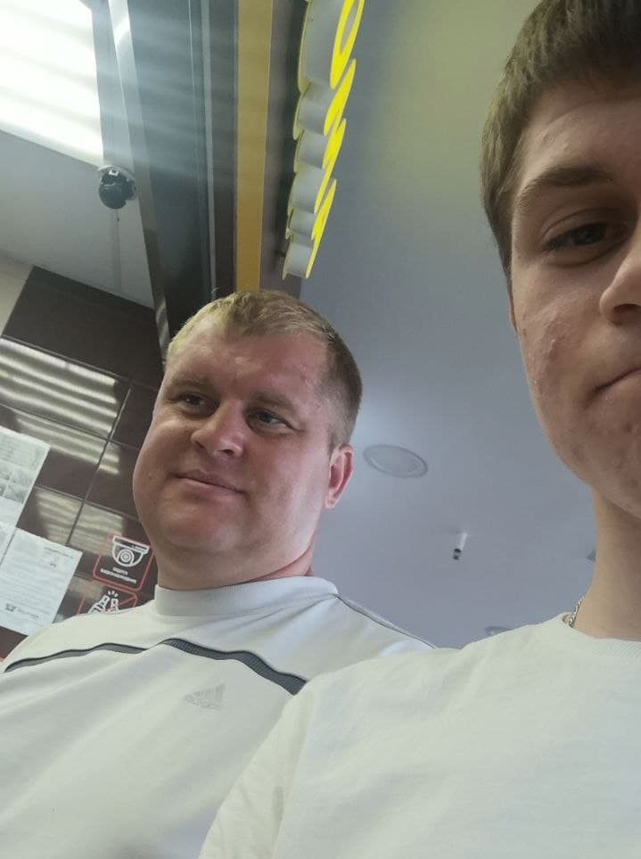
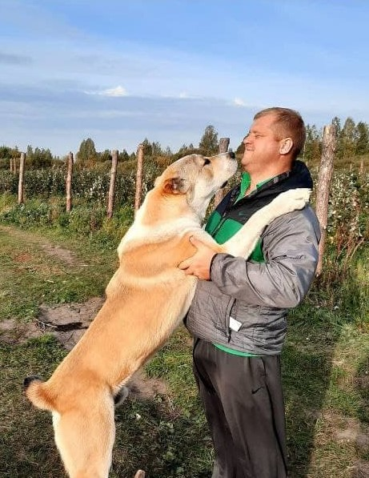
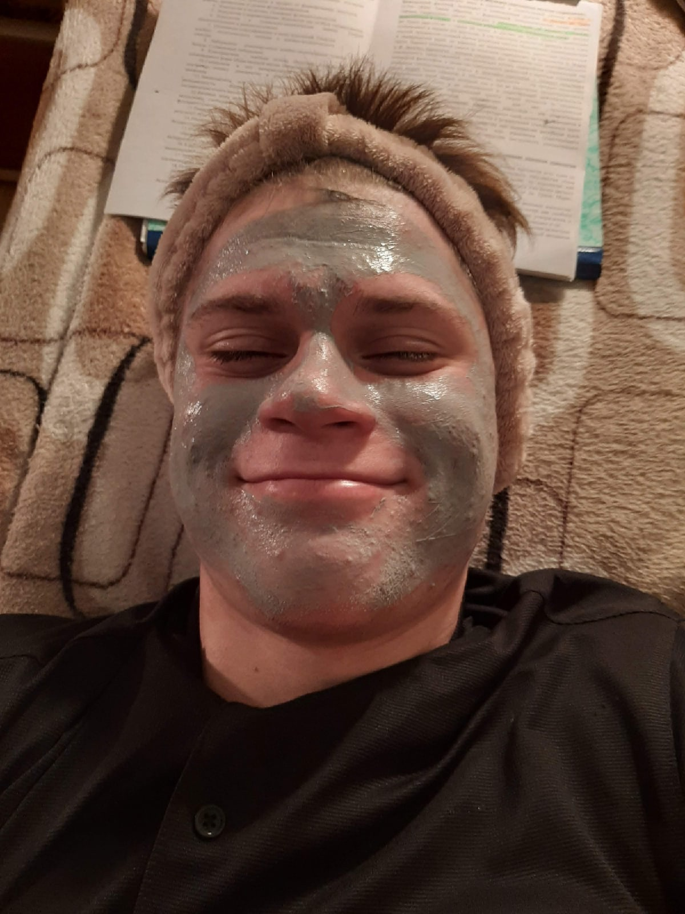
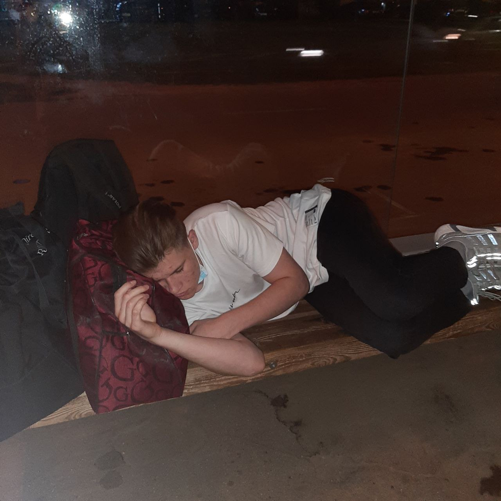
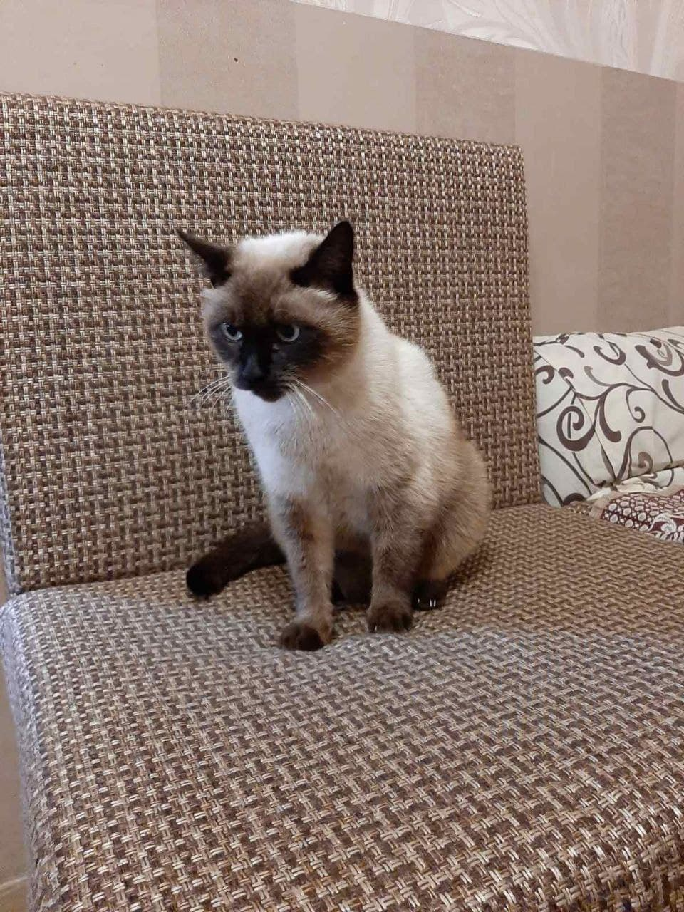

Обо мне
Я закончил гимназию в Гомеле в профильном классе(английский язык + математика).
Активно участвовал в олимпиаде по англискому языку и показывал хорошие результаты,
возможно поэтому мне и повезло и я поступил в АУпПРБ последним на бюджет.

Я очень люблю играть в волейбол, играю везде, где можно и иногда прогуливал уроки и не делал домашку ради того,
чтобы поиграть с друзьями. В последнее время начал играть в настольный теннис.(сверху мой друг - член национальной
сборной РБ по волейболу)
Очень люблю своих малышей, всегда с ними играю и балуюсь, мама за это ругает, но мы все равно бесимся. Сейчас
я переехал в Минск и вижу как малышей, так и родителей довольно редко, но, когда приезжаю, стараюсь проводить
время дома.
НИЖЕ ФОТКИ ВСЕЙ МУЖСКОЙ ЧАСТИ НАШЕЙ СЕМЬИ


.jpg)
Так же я люблю гулять со своими друзьями, в 10-11 я приобрел очень много крутых знакомств, но сейчас почти со
всеми я не поддерживаю контакт, да и они тоже(
В Гомеле у меня осталось несколько хороших людей, с которыми я стараюсь увидеться всегда, когда приезжаю. Также
много новых знакомств, как хороших, так и плохих, я завел в Академии
С недавних пор у меня появилась собака, огромный алабай по кличке Езон (его так назвали в питомнике). Когда он
был небольшим, я с братьями играли с ним, а сейчас он слишком огромный и просто раздавит нас. Это наш
охранник.
Также у меня есть сиамский кот по кличке Тос, он уже старый, но по молодости я с ним очень часто бесился.



